Facilities
Computing, UAV, and field instrumentation used in our research and teaching.
CISR/GISTAR GIS Lab

The UCSC CISR GISTAR Lab is a state-of-the-art facility for geospatial research and education, equipped with high-performance computers featuring RTX 4090/3060 GPUs, SSD storage, and dual monitors. It supports GIS, remote sensing, drone mapping, machine learning and AI with access to drones, a large-format plotter, and a 3D printer. The lab includes a seminar room, student workspace, high-resolution projection systems, an AR map sandbox, and a DTEN interactive display. Software resources include ArcGIS Pro, Esri Drone2Map, QGIS, ENVI, Google Earth Engine, and statistical tools, enabling advanced spatial analysis and research.
Location: Interdisciplinary Sciences Building, rooms 486 and 450
UAVs and sensors
-

senseFly eBee X
Fixed-wing UAV for large-area mapping. Supports RTK/PPK workflows and interchangeable payloads (including S.O.D.A.). Specifications
-
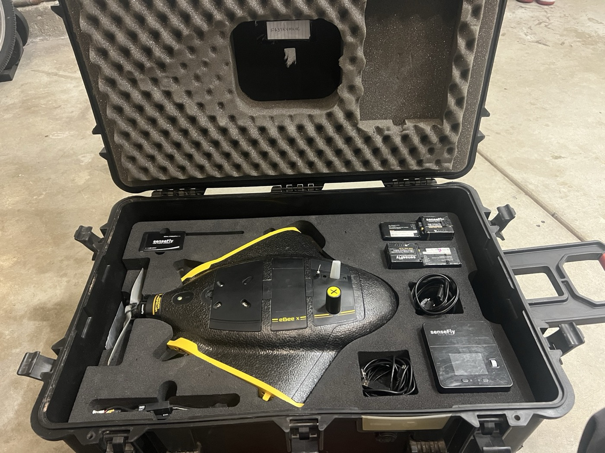
senseFly S.O.D.A. camera
Mapping camera payload for the eBee X platform (RGB). Specifications
-
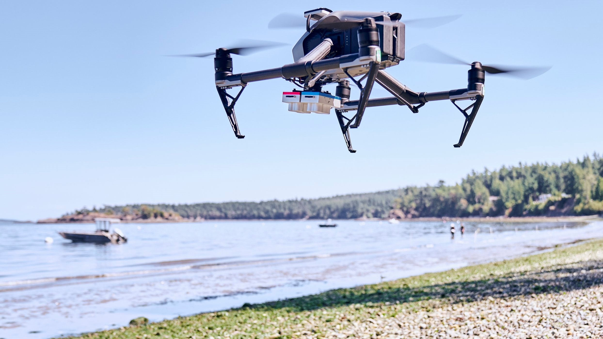
Inspire 2
Multispectral drone platform with intelligent flight features. 27-minute flight time. Specifications
-
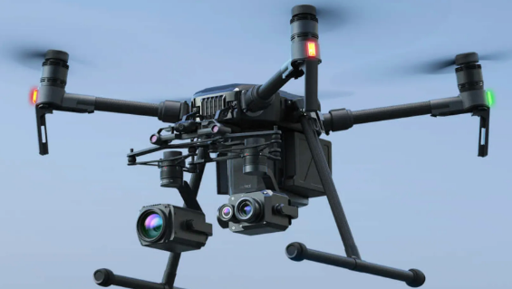
Matrice 200
Versatile and rugged thermal drone platform supports multiple payload configurations. 38-minute flight time. Specifications
-
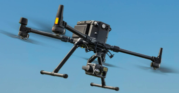
Matrice 300 RTK
State-of-the-art industrial drone solution with LiDAR/RGB aerial mapping capabilities. 55-minute maximum flight time. Specifications
-
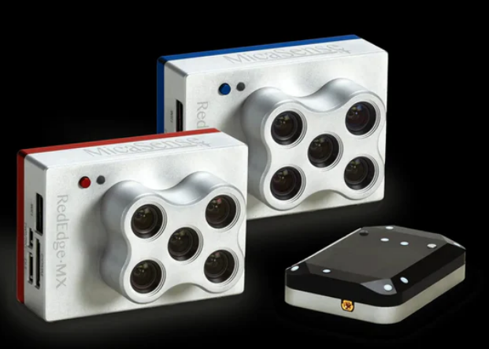
MicaSense 10-Band Dual Sensor
This advanced sensor system combines two powerful 5-band sensors, capturing high-resolution imagery across ten spectral bands, including visible light, near-infrared, and red edge. Specifications
-
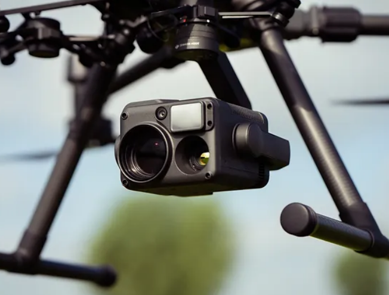
Zenmuse H20T Thermal Sensor
Thermal sensor provides precise temperature measurements to identify heat signatures and monitor infrastructure efficiently. Specifications
-
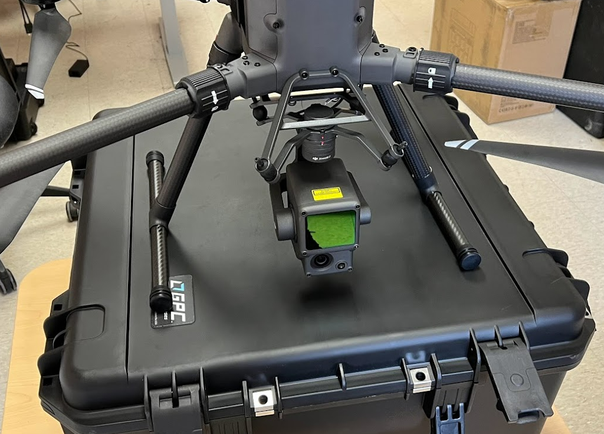
Zenmuse L1 LiDAR Sensor
Advanced Livox LiDAR technology captures up to 240,000 points per second, enabling the generation of accurate, high-density point clouds for forestry and infrastructure inspection. Specifications
-
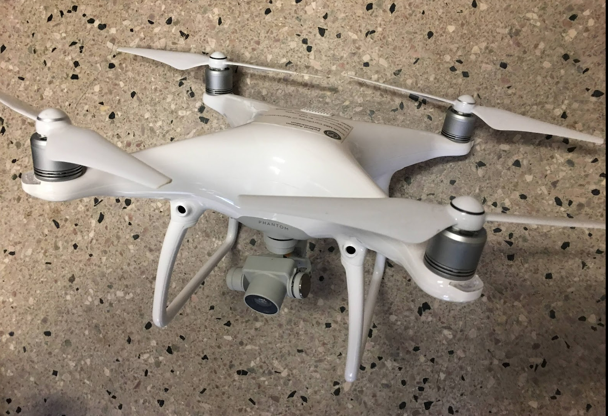
DJI Phantom 4 Pro
Aerial photography and videography drone designed to capture stunning images and breathtaking footage. Specifications
-
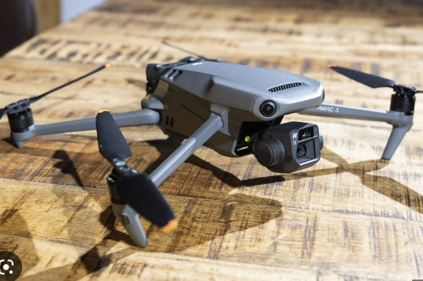
DJI Mavic 3
Dual-camera foldable drone that takes aerial photography and videography to new heights. Specifications
-
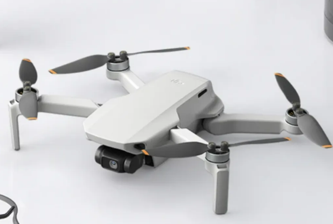
DJI Mini SE
Weighing just 249 grams a perfect entry point for beginners and educational use alike. Specifications
Field instruments
-
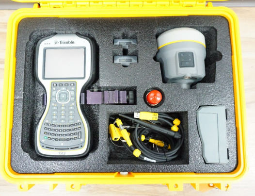
Trimble GNSS
High-performance, compact GNSS receiver for high-quality, location-based data collection and management.
-
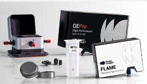
Field Spectroradiometer
High-performance instrument captures precise spectral data across a wide wavelength range.
-
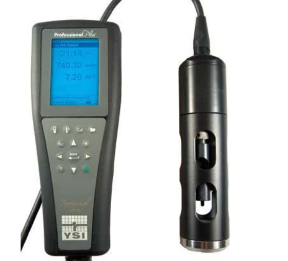
YSI Water Sonde
This advanced multi-parameter instrument measures key water quality parameters such as temperature, conductivity, dissolved oxygen, pH, turbidity, and more.